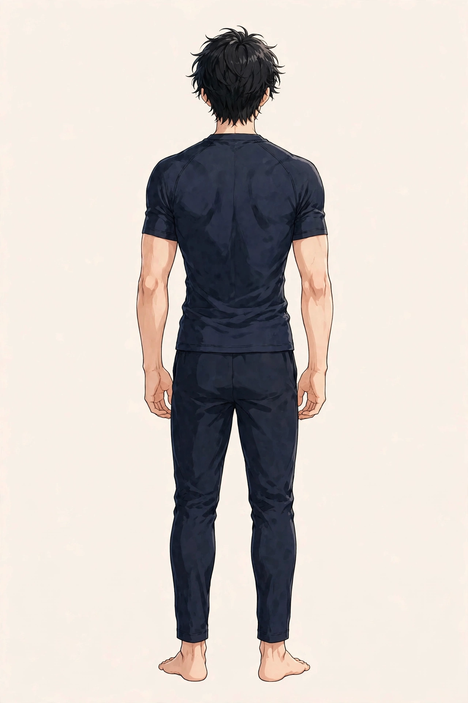

東三国で年末の忙しさに気になる疲労感｜男性の年末の過ごし方とセルフケア、受診の目安
男性の年末の過ごし方とセルフケア、受診の目安

「年末が近づくと仕事が立て込んで、休んでも疲れが抜けない感じがする」「忘年会や付き合いが続いた週は、朝から体が重い」「休みの日に長く寝てもすっきりしないまま、年を越しそうだ」。東三国や新大阪、淀川区周辺で働く男性から、年末の時期の疲労感にまつわるこうした声を聞くことがあります。年末の疲労感の感じ方や背景は人によって異なり、一つの原因だけで説明できるものではありません。この記事では原因を断定するのではなく、年末の忙しさの中で気になる疲労感についての一般的な考え方と、考えられる要因、年末の過ごし方と日常で試せるセルフケア、医療機関に相談したほうがよい目安をまとめます。夜の眠りを中心に扱った夜の寝つきと疲労感についてのコラムや、腰まわりを中心に扱った疲労感と腰の重さについてのコラム、週末・休みの日の場面に絞った週末の全身の疲労感についてのコラムとは視点を分け、ここでは「年末」という季節の場面と「忙しさの重なり」に焦点を当てます。お悩み別のページでも慢性疲労・疲労感や睡眠としてまとめています。
年末の疲労感とは：忙しさが重なる時期に感じやすい、全身の重だるさと抜けにくさ
一般に「疲労感」と呼ばれる感覚は、体全体が重だるい、朝起きてもすっきりしない、休んだはずなのに疲れが残っている、夕方になるとどっと疲れが出る、などとして自覚されることが多いとされています。年末は、仕事の締め切りや引き継ぎ、忘年会などの付き合い、帰省や年末年始の準備といった予定が短い期間に重なりやすく、例年この時期だけ疲れの抜けにくさを意識する方もいます。「12月に入ってから、寝ても疲れが残る」「予定のない日がほとんどなく、休んだ気がしない」「年明けの仕事始めまで、この調子が続きそうだ」など、出方は人それぞれです。まずは「どんな予定が続いた週に強く感じるか」「睡眠時間は足りているか」「肩や腰など、決まった部位の重さも重なっているか」を自分の言葉で整理しておくと、年末の予定の入れ方やセルフケアの選び方、専門家に相談するときの伝え方がスムーズになります。疲労感とあわせて、肩こりや腰の重さ、寝つきの悪さを感じる場合もあり、12月の過ごし方全体を振り返ってみることも一つの手がかりになります。
考えられる要因の整理
年末の疲労感を意識する背景には、仕事や予定の詰まり具合に、睡眠や飲食、寒さといった季節の条件が重なっている場合があります。以下は代表的なものとして挙げられる要因ですが、当てはまるかどうかや程度は人によって異なります。
疲労感と重なって自覚されやすい部位の位置は、図1のとおりです。

年末の疲労感は、特定の部位だけでなく、首の付け根から背中、腰、ふくらはぎにかけての重さや張りと重なって自覚されることが多いとされます。忙しい日が続くと、体全体に力が入ったまま抜けにくくなる方もいます。位置は目安です。
- 仕事量の増加と、締め切りに追われる日々：年末は、年内に終わらせたい仕事や引き継ぎ、挨拶回りなどが重なり、残業や休日出勤が増える方もいます。忙しい日が何週も続くと、休みの日だけでは疲れが抜けきらないと感じる場合があるとされます。まずは、12月の予定表全体を見渡して、詰まっている週がどこかを確認する方もいます。
- 睡眠時間の短さと、夜更かしの積み重ね：仕事の持ち帰りや付き合い、年賀状や大掃除といった年末ならではの用事で就寝が遅くなり、睡眠時間が削られやすい時期です。短い睡眠が何日も重なると、同じ仕事量でも疲労感を強く意識しやすい、と話す方もいます。起床時刻だけは大きくずらさない、と決めている方もいます。
- 忘年会など、飲食の機会の増加：忘年会や会食が続くと、食事の量や飲酒の機会が増え、胃腸に負担を感じる、翌朝の体が重い、と話す方もいます。連日の予定になる週は、間に予定のない日を置くかどうかも、過ごし方の分かれ目になる場合があります。
- 寒さと日照時間の短さ、運動不足：12月は気温が下がり、日が暮れるのも早くなります。寒さで体に力が入りやすく、外出や歩く機会が減って運動不足になりやすい時期です。肩や腰まわりの張りを、寒い日に強く意識するという声もあります。
- 帰省・旅行・買い物など、予定の詰め込み：年末年始の帰省や旅行の手配、買い物や家の片づけなど、仕事以外の予定も短い期間に集中します。休みの日まで予定で埋まると、体を休める時間が取りにくくなります。予定の数を数えてみるだけでも、詰め込み具合に気づく手がかりになります。
- 気持ちの張りが続くこと：一年の締めくくりや新年の準備に向けて、仕事でも家庭でも段取りを考えることが増え、頭の切り替えがしにくい日が続く場合があります。体を動かしていない日でも、夕方にはどっと疲れを感じる、と話す方もいます。
- 肩こり・腰の重さなど、体の張りとの重なり：忙しい日が続く時期は、デスクワークや車の運転、立ち仕事などで同じ姿勢が長くなりやすく、肩こりや腰の重さといった部位の張りと、疲労感が重なって自覚される場合があります。部位ごとの様子は、関連するコラムでも整理しています。
年末の過ごし方と、日常で試せるセルフケア
予定の入れ方の見直しと、忙しい日の合間や帰宅後に試せるものを中心にまとめました。無理に予定を削ったり、体調がすぐれないのに動き続けたりはせず、様子の変化が強いときは無理をしないでください。気になる様子が強いときは、セルフケアより先に医療機関への相談をご検討ください。
- 睡眠時間を先に確保する：予定を入れる前に、就寝時刻から逆算して「この日はここまで」と区切りを決めておく見直しです。付き合いが続く週は、帰宅後の用事を一つ減らす、翌朝の支度を前の晩に済ませるなど、夜の時間を空ける工夫をする方もいます。
- 湯船につかって体を温める：帰宅後の入浴で、シャワーだけで済ませず湯船につかり、首から肩、腰まで温める過ごし方です。熱すぎない温度で、気持ちよいと感じる範囲にとどめてください。入浴のあとは体が冷えないうちに布団に入る方もいます。
- 軽く体を動かす時間をはさむ：帰り道に一駅分歩く、買い物のついでに遠回りする、階段を使うなど、日常の移動の中で体を動かす見直しです。まとまった運動の時間が取れない時期こそ、小さな動きを積み重ねる方もいます。体調がすぐれない日は無理をしないでください。
- 椅子に座って目を閉じ、深く呼吸する：椅子やソファに楽な姿勢で座り、目を閉じて肩の力を抜き、数分間ゆっくり呼吸する休み方です（手順は図2）。仕事の合間や帰宅後の切り替えに取り入れる方もいます。眠ってしまいそうなときは、タイマーを掛けておくと安心です。
- 飲食の場では、水分と休みの日をはさむ：会食の場では合間に水やお茶をはさむ、連日にならないよう予定の間隔を見る、といった見直しです。帰宅が遅い日は、就寝前の食事を軽めにする方もいます。体質や持病によっては当てはまらない場合もあるため、ご自身の様子に合わせて調整してください。
- 休みの日は、予定を詰め込みすぎない：年末年始の休みも、大掃除や帰省、挨拶回りで埋め尽くさず、何も予定を入れない時間を先に確保しておく過ごし方です。横になって休む時間や、湯船にゆっくりつかる時間を予定として数える方もいます。
- 首・肩・腰をゆっくり動かし、温める：首や肩をゆっくり回す、腰を軽くひねるなど、張りを感じる部位を無理のない範囲で動かすケアと、蒸しタオルや入浴で温めるケアの組み合わせです。痛みを感じる方向には無理に動かさず、熱すぎない温度で行ってください。

①椅子やソファに楽な姿勢で座り、手は膝の上に置く ②目を閉じ、肩の力を抜いて、数分間ゆっくりと呼吸を続ける ③目を開けるときは、遠くのほうをぼんやり眺めてから立ち上がる、が基本の流れです。眠ってしまいそうなときは、タイマーを掛けておくと安心です。
セルフケアは一度に全部をやろうとせず、忙しい日でも続けられそうなものを一つ選ぶところから始めるのがおすすめです。感じ方には個人差があり、その週の予定の詰まり具合や睡眠、気温によっても変わりますので、無理のない範囲で行ってください。市販薬などを使う場合は、用法・用量や対象を商品の表示で確認し、頼る日が長く続くときは専門家への相談もご検討ください。
医療機関への受診を考える目安
次のような様子がある場合は、セルフケアや当院でのケアの前に、内科や整形外科、心療内科などの医療機関への相談をご検討ください。当院は医療機関ではなく、症状の診断や治療は行いません。「年末の忙しさのせいだろう」と思っていても、背景にほかの原因が関わる場合があります。特に、年が明けても様子が変わらない場合や、ほかの症状を伴う場合は、時期にかかわらず早めの相談が大切です。
- 年が明けて生活が落ち着いても、数週間疲労感が続き、様子が変わらない
- 発熱や、急な体重の減少・増加を伴っている
- 眠れない日が続く、夜中に何度も目が覚めてしまう
- 気分の落ち込みや意欲の低下が強く、日常生活に支障が出ている
- 動悸や息苦しさ、胸の違和感を伴っている
- 特定の部位の痛みが日に日に強くなっている、手足のしびれがある
上記に当てはまらなくても、気になる様子が続くときは、早めに医療機関や専門家へ相談することが大切です。自己判断だけで様子を見続けないことも一つの目安になります。
北辰堂のご案内
北辰堂は、大阪市淀川区東三国二丁目にある男性専用の整体院です。施術歴30年の平賀伸人（鍼灸師・国家資格）が、整体とリラクゼーションを行います。当院では鍼灸施術は行いません。営業は平日・土曜17:00〜22:00、日曜10:00〜22:00の完全予約制です。年末の忙しさの中で疲労感が気になる方は、仕事帰りの平日・土曜の夕方や、日曜の時間帯に、睡眠時間や予定の詰まり具合も含めてご相談いただけます。プライバシーへの配慮のため、詳しい住所はご予約確定後にLINEでご案内します。
料金は60分 初回2,000円／2回目以降6,000円、90分 初回3,000円／2回目以降9,000円で、お支払いは現金のみです。施術を受けたからといって体の状態がどうなるかをお約束することはできませんが、その日の体の状態を確認しながら、疲労感だけでなく姿勢全体の様子も見て、ゆっくり体を預けられる時間をご用意しています。年末の過ごし方で気になっていることも、カウンセリングの際にお聞かせください。気になるお悩みの例はお悩み別一覧にもまとめています。
コースの内容はメニュー・料金、施術者は施術者について、ご予約の流れは当日の流れとLINE予約の下書きづくり、場所についてはアクセスをご覧ください。あわせて夜の寝つきと疲労感についてのコラムや疲労感と腰の重さについてのコラム、週末の全身の疲労感についてのコラム、デスクワーク後に気になる首こりについてのコラム、よくある質問もご参考ください。
ほかのコラム記事
関連するお悩みページ
ご予約・ご相談はLINEから
東三国・新大阪・淀川区周辺で、体のケアの相談先をお探しの方は、LINE公式アカウント（北辰堂）からお気軽にご連絡ください。現在の状態をお聞きしたうえで、施術の進め方をご案内します。
LINEで予約する